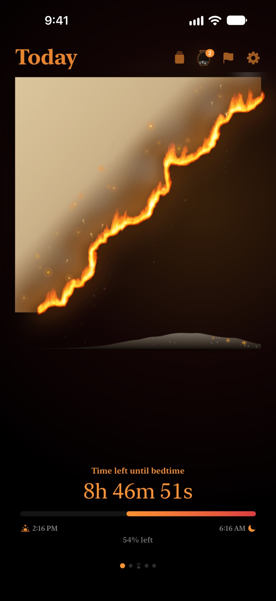
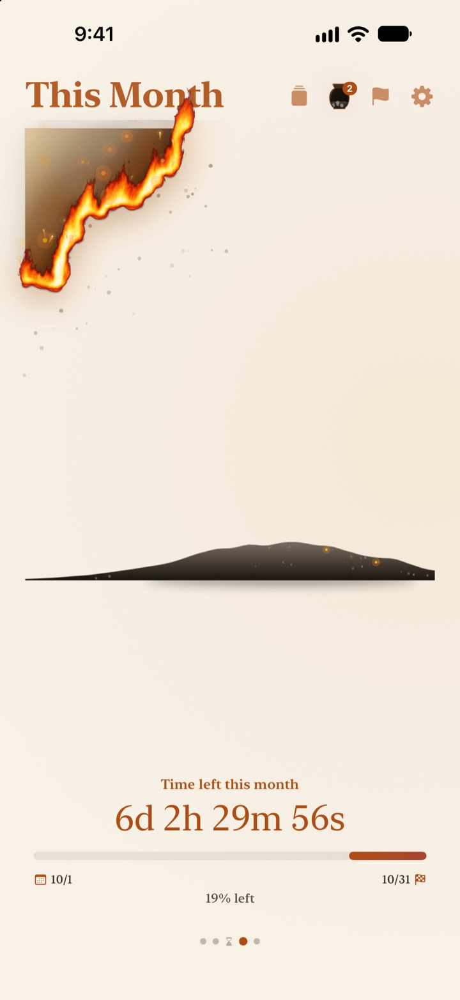
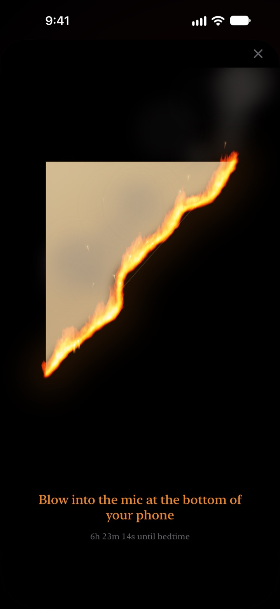
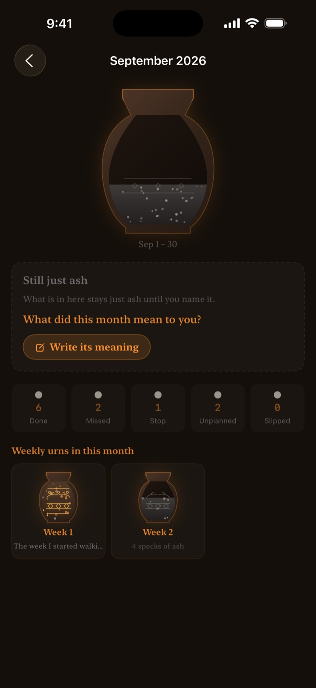

Watch what's left
of today burn down
An evening that looks harmless as a number feels different as a sheet of parchment on fire. Thirty minutes before bed, blow on the screen to put the flame out and close the day.
The burning parchment, the blow-out ritual and reflections are all free.

Try blowing it out
Move the clock to just before bedtime, then hold the button or blow into your mic.
Ever looked up and it's suddenly midnight?
You had dinner, sat down for a minute, and the day was gone. The numbers on a clock look the same every evening, so you never feel the time running out. Burning Parchment shows what's left as parchment burning away, so you notice before the evening disappears.
Your day, week and year, burning down
From the moment you wake up until bedtime, the parchment slowly burns. See what's left of this week, this month and this year the same way.
Add a goal with a date as a deadline and it counts down right alongside.

Blow out the day
From 30 minutes before bedtime, blow on the burning parchment to put the fire out. Only the strength of your breath is used, and nothing is recorded.
The piece that's left is kept for you. Flip it over and write one line about today on the back.

Time gone by settles as ash
Look back with a one-line reflection and place it as a dot on a two-axis graph of how the time was spent. Reflections pile up in weekly and monthly urns, and you can read them again in the Reflection Book.
Ash Flow shows where your time went with a distribution graph and an ember calendar.

Three steps to start
- 1
Set wake-up and bedtime
Tap the gear in the top right. The parchment lights and goes out on that schedule.
- 2
Pick your time span
Swipe between day, week, month and year, or hide the pages you don't need in Settings.
- 3
Add a widget
Put it on your Home Screen or Lock Screen and see the time left without opening the app.
Where you can see the time left
- Day
- From waking up to bedtime
- Week · Month · Year
- What's left of this week, month and year
- Free Time
- This week's parchment burns only during the hours you set aside for yourself (Pro)
- Deadlines
- Time left until a goal's date. One is free
- Home Screen widgets
- Day parchment in small, medium and large. Week, month, year and deadlines in small and medium
- Lock Screen widgets
- Circular, rectangular and inline
- Dynamic Island · Live Activity
- From an hour before bed, or all day. Choose or turn it off in Settings
Expand the Dynamic Island to see the burning parchment with the full countdown.
The parchment is free. Pro holds more.
Free
- Day, week, month and year parchments
- Blowing out the flame and collecting pieces
- One-line reflections, urns and the Reflection Book
- Morning check-in, with optional Health sleep data
- Home Screen and Lock Screen widgets, Dynamic Island
- One deadline
Burning Parchment Pro
- Burn only your own free time
- Parchment themes: Moonlit Hanji, Celadon, Dusk
- Flame styles: Wildfire, Embers, Sparkler
- Share collected pieces as cards and posters
- Export your Reflection Book as a PDF
- Twelve months of Ash Flow
- Unlimited deadlines
Not a subscription. One purchase, yours for life, including every Pro feature added later.
New device? Tap Restore Purchases in Settings.
Questions
The widget shows a different time from the app.
iOS doesn't redraw Home Screen widgets every second. Opening the app brings them back in sync. For a countdown that ticks by the second, use the Dynamic Island and the Live Activity on your Lock Screen.
Blowing doesn't put the flame out.
You can blow it out from 30 minutes before bedtime. Check that microphone access is allowed, then blow steadily into the mic at the bottom of your phone for about a second. A single short burst of sound won't do it.
Is my voice recorded?
No. It only checks how hard you blow. No sound is recorded or stored.
What does it show while I'm asleep?
After bedtime a burning heart appears and shows how far along your night is until wake-up. In the morning it asks whether you got to bed on time, and if you were late, today's parchment starts out that much charred. Connect Apple Health and it uses your recorded sleep time instead of asking.
When do notifications arrive?
One hour before bedtime. If nothing arrives, check Settings > Notifications > Burning Parchment.
Does it drain my battery?
The countdown inside the app ticks every second, but widgets refresh on a low-power schedule managed by iOS, so the impact is small.
Where is my data stored?
Your wake-up time, bedtime, deadlines, reflections and urns stay on your device. The developer only receives anonymous usage statistics, crash diagnostics and any feedback you choose to send. No ads, no tracking.
Is Pro a subscription?
No. You pay once and keep it for life. On a new device, tap Restore Purchases in Settings.
Bug reports, feature ideas or anything else: write to leeo@kakao.com.